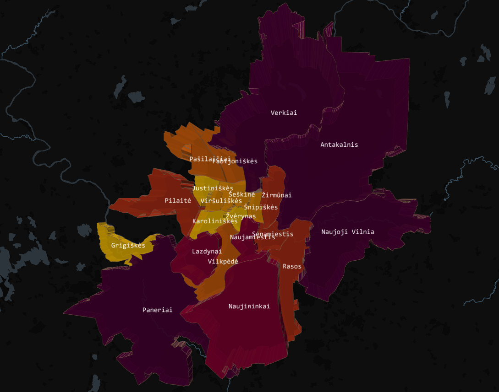
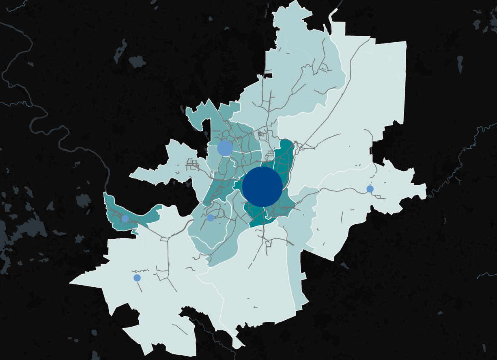
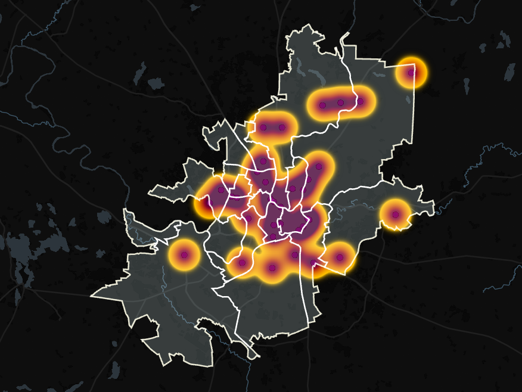
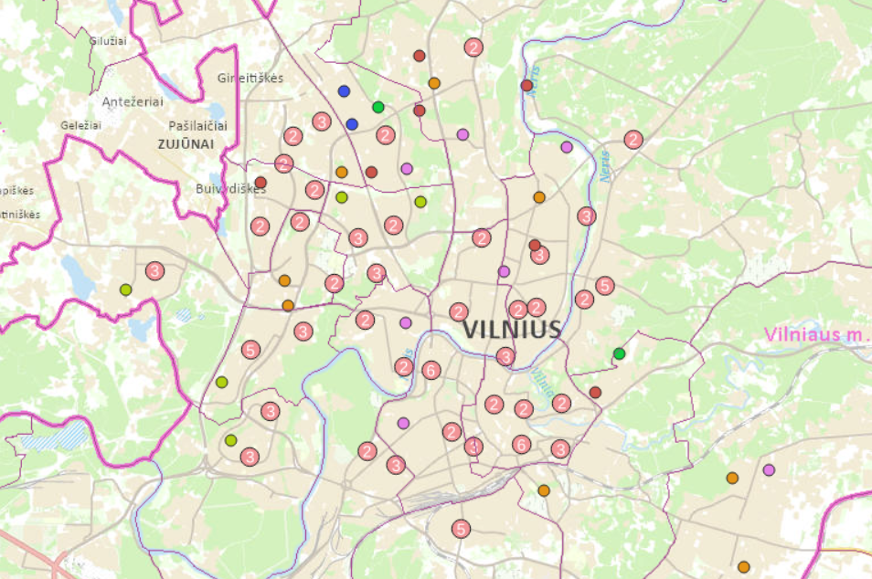
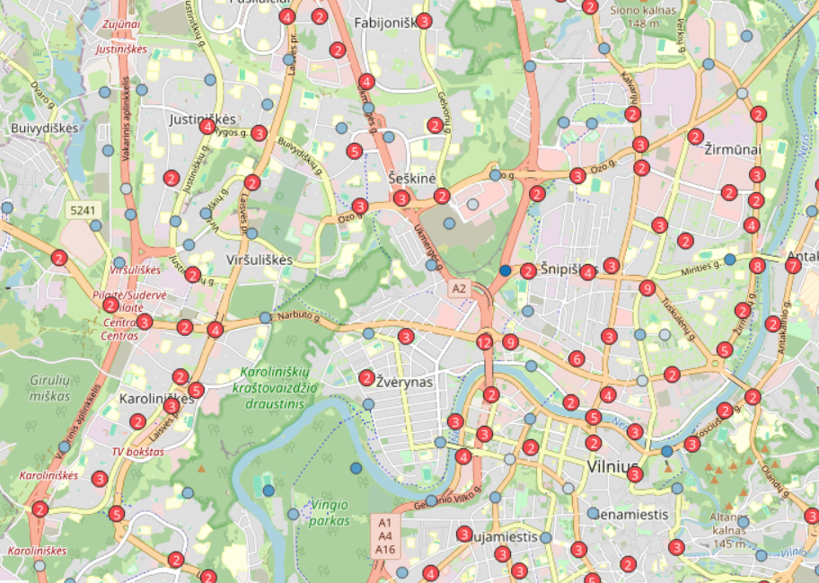
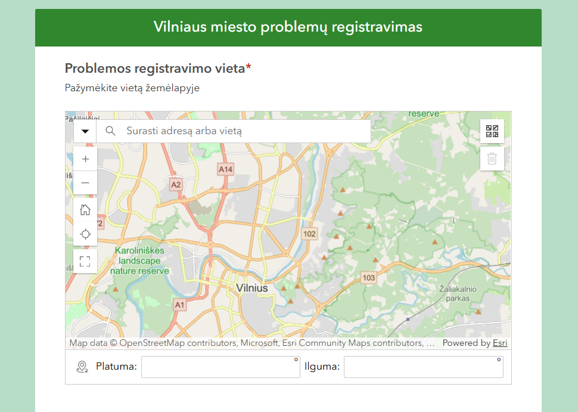
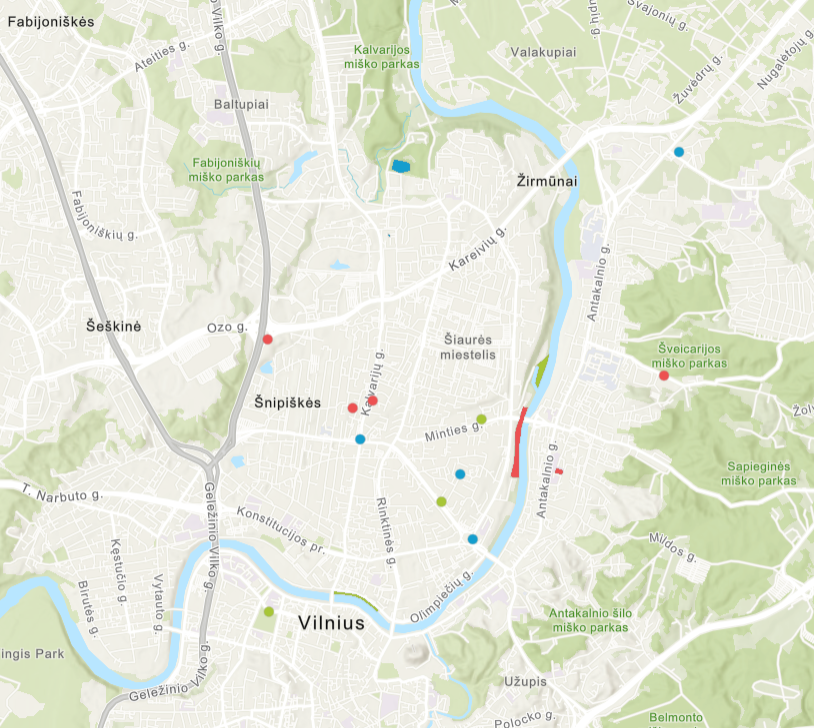

Gyventojų skaičiaus ir viešojo transporto stotelių 3D žemėlapis
Vilniaus miesto seniūnijų 3D žemėlapis, kuriame seniūnijų aukštis vaizduoja gyventojų skaičių, o spalvinė skalė - viešojo transporto stotelių skaičių kiekvienoje seniūnijoje. Žemėlapis leidžia palyginti gyventojų pasiskirstymą ir viešojo transporto infrastruktūros išvystymą skirtingose miesto teritorijose.
Atidaryti žemėlapį →
Geriamojo vandens stotelių ir dviračių takų žemėlapis
Interaktyvus Vilniaus miesto žemėlapis, kuriame pateikiamas geriamojo vandens stotelių ir dviračių takų pasiskirstymas. Žemėlapis leidžia įvertinti vandens stotelių prieinamumą skirtingose miesto teritorijose bei jų sąsajas su dviračių infrastruktūra.
Atidaryti žemėlapį →
Eismo įvykių dinamika 2025 m. vasarą
Interaktyvus laiko animacija paremtas žemėlapis vaizduoja 2025 m. vasarą Vilniaus mieste registruotus eismo įvykius. Animacija leidžia stebėti, kaip eismo įvykiai pasiskirsto skirtingose miesto teritorijose ir kaip kinta jų koncentracija laikui bėgant.
Atidaryti žemėlapį →
Vilniaus mokyklų pasiskirstymas pagal ugdymo įstaigų tipus
Žemėlapyje vaizduojamos Vilniaus miesto mokyklos, suskirstytos pagal ugdymo įstaigų tipus. Papildomi sluoksniai: viešojo transporto stotelės ir administracinės ribos, leidžia analizuoti mokyklų erdvinį pasiskirstymą bei jų pasiekiamumą skirtingose miesto teritorijose.
Atidaryti žemėlapį →
Eismo įvykiai pagal sužeistų žmonių skaičių (2025 m.)
Žemėlapyje vaizduojami 2025 m. Vilniaus mieste registruoti eismo įvykiai, klasifikuoti pagal sužeistų žmonių skaičių. Papildomi sluoksniai: pirminės ambulatorinės sveikatos priežiūros įstaigos ir eismo įvykių informacinės sistemos duomenys, kurie leidžia išsamiau analizuoti eismo saugumo situaciją ir jos teritorinius ypatumus mieste.
Atidaryti žemėlapį →
Vilniaus miesto infrastruktūros problemų registravimas
Survey123 pagrindu sukurta sistema, skirta miesto problemoms registruoti ir stebėti. Naudotojai gali pateikti pranešimus apie pastebėtas problemas užpildydami apklausos formą bei pažymėdami jų vietą žemėlapyje.
Atidaryti anketą →
Vilniaus miesto infrastrukūros problemų peržiūros žemėlapis
ArcGIS Online žemėlapis, skirtas registruotų miesto problemų vizualizavimui ir stebėsenai. Žemėlapyje pateikiami gyventojų užregistruoti pranešimai, leidžiantys analizuoti problemų pasiskirstymą ir koncentraciją skirtingose Vilniaus miesto teritorijose.
Atidaryti žemėlapį →